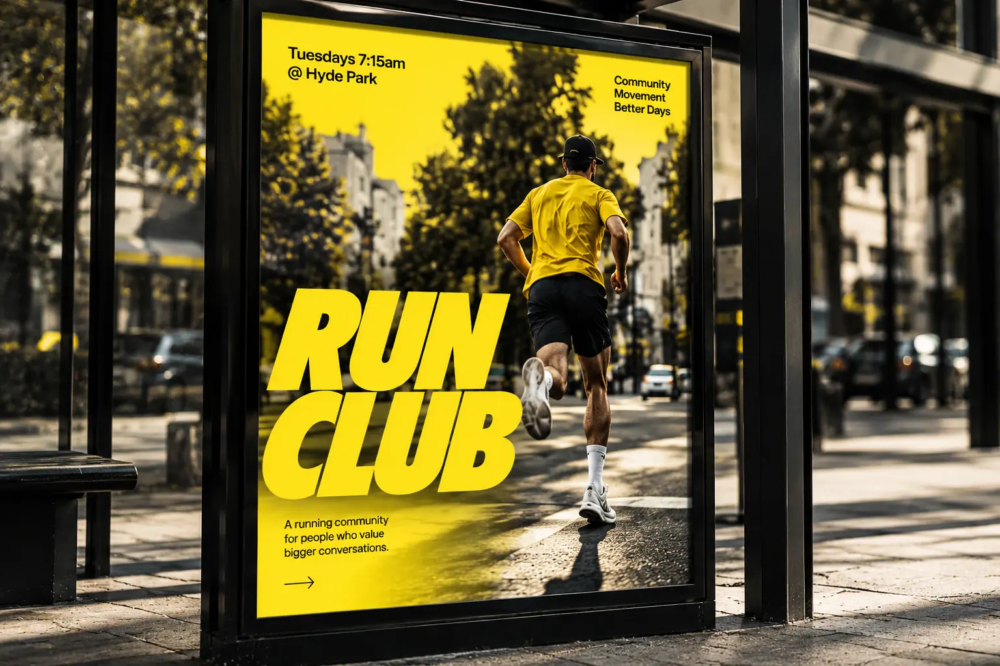

Marken-Wiki › Design › Einen eigenen Bildstil entwickeln
Einen eigenen Bildstil entwickeln
Ein Bildstil sorgt dafür, dass man eure Fotos erkennt, bevor man das Logo sieht.
01Definition
Ein Bildstil – auch Bildsprache genannt – legt fest, wie Fotos, Illustrationen und Videos einer Marke aussehen. Er sorgt dafür, dass man Bilder einer Marke erkennt, bevor man das Logo sieht. Ein klarer Bildstil macht einen Auftritt einheitlich, auch wenn viele verschiedene Menschen Inhalte produzieren.
02Woraus ein Bildstil besteht
- Licht: hart oder weich, natürlich oder gesetzt, warm oder kühl.
- Farbe: Farbstimmung, Sättigung, wiederkehrende Akzente.
- Perspektive und Ausschnitt: nah oder weit, von oben oder auf Augenhöhe, angeschnitten oder vollständig.
- Motive: Menschen, Produkte, Orte, Details – und in welchem Verhältnis.
- Haltung: inszeniert oder dokumentarisch, ernst oder verspielt.
03Regeln entwickeln
Sammelt dreißig Bilder, die zu eurer Marke passen, und dreißig, die nicht passen – aus eigenen Archiven, Magazinen oder Bilddatenbanken. Beschreibt, was die passenden gemeinsam haben. Daraus entstehen drei bis fünf Regeln, die so konkret sind, dass eine Fotografin sie ohne Rückfrage umsetzen kann.
Gute Regeln sind beobachtbar: „Menschen sind in Bewegung“ oder „Das Licht kommt immer von der Seite“ lässt sich prüfen. „Authentisch und emotional“ dagegen nicht.
04Aus der Praxis
Beim Run Club sind es drei Regeln: echte Bewegungsunschärfe statt gestellter Posen, warmes Seitenlicht am frühen Morgen und ein Gelb, das in jedem Bild vorkommt – als Shirt, Flasche oder Farbfläche. Diese wenigen Regeln reichen, damit Plakat, Social Media und Website wie aus einem Guss wirken.

05Stockfotos und eigene Bilder
Eigene Fotos sind fast immer stärker als Stockbilder, weil sie echte Menschen und Orte zeigen. Wo Stockbilder nötig sind, hilft der Bildstil bei der Auswahl – und eine einheitliche Nachbearbeitung, etwa ein gemeinsamer Farblook, verbindet Bilder aus unterschiedlichen Quellen.
06Typische Fehler
Zu viele Regeln, die niemand behält. Regeln, die nur auf professionelle Shootings passen, nicht auf Handyfotos im Alltag. Und Bilder, die nur schön sind, aber nichts über die Marke erzählen.
07Checkliste
- Drei bis fünf beobachtbare Regeln.
- Beispielbilder für „passt“ und „passt nicht“.
- Ein einheitlicher Farblook für die Nachbearbeitung.
- Hinweise für Handyfotos und Social Media.
- Die Regeln sind in den Guidelines dokumentiert.
08Fazit
Ein Bildstil entsteht aus wenigen, klaren Regeln. Wer sie aufschreibt und konsequent anwendet, wird erkannt, bevor das Logo zu sehen ist.
09Häufige Fragen
Brauchen wir für einen Bildstil ein Fotoshooting?
Nicht sofort. Man kann mit vorhandenen Bildern beginnen und den Stil beim nächsten Shooting gezielt umsetzen.
Gilt der Bildstil auch für Illustrationen?
Ja, die Grundprinzipien wie Farbe, Stimmung und Perspektive sollten sich auch dort wiederfinden.